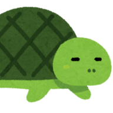

指で左右に動かせます・ピンチで拡大もできます
AT後のCZ失敗回数とアイキャッチ・チッチェのセリフから、次のブレイクゾーンの成功期待度を計算します。
画像をタップすると大きく表示できます
アイキャッチに出たキャラ（色）
アイキャッチで液晶右側に出たキャラ（周りの円陣の色でも判別できます）。複数見たときは一番上の色を選んでください
| セリフ（「お待ちしておりました！」の後） | 示唆 |
|---|---|
| どちらのクエストへ向かわれますか？ | HI以上期待度UP（弱）計算には入れない |
| おすすめしたいクエストがいくつかありますよ！ | HI以上期待度UP（強）計算には入れない |
| 重要なクエストがありますよ！ | HI以上濃厚 |
| 先ほど珍しい依頼が入ってきましたよ！ | SP濃厚 |
※「期待度UP（弱・強）」のセリフは具体的な振り分けが不明なため、計算対象から除外しています。
失敗したCZの「1個目のアイコン」を古い順にタップ（メニュー画面で確認できます）。入れ間違えたマスはタップ→正しいアイコンで入れ替え、最後のマスは×で消せます

狙い目・やめどきの参考はこちら
Lモンハンサンブレイク｜
天井狙い・やめどき
かめとうさぎのパチスロブログ
指で左右に動かせます・ピンチで拡大もできます